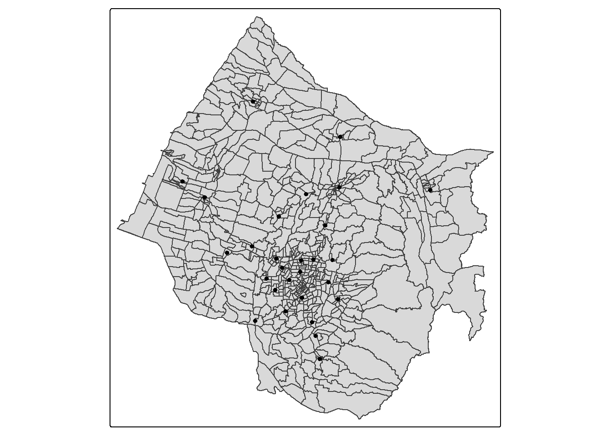
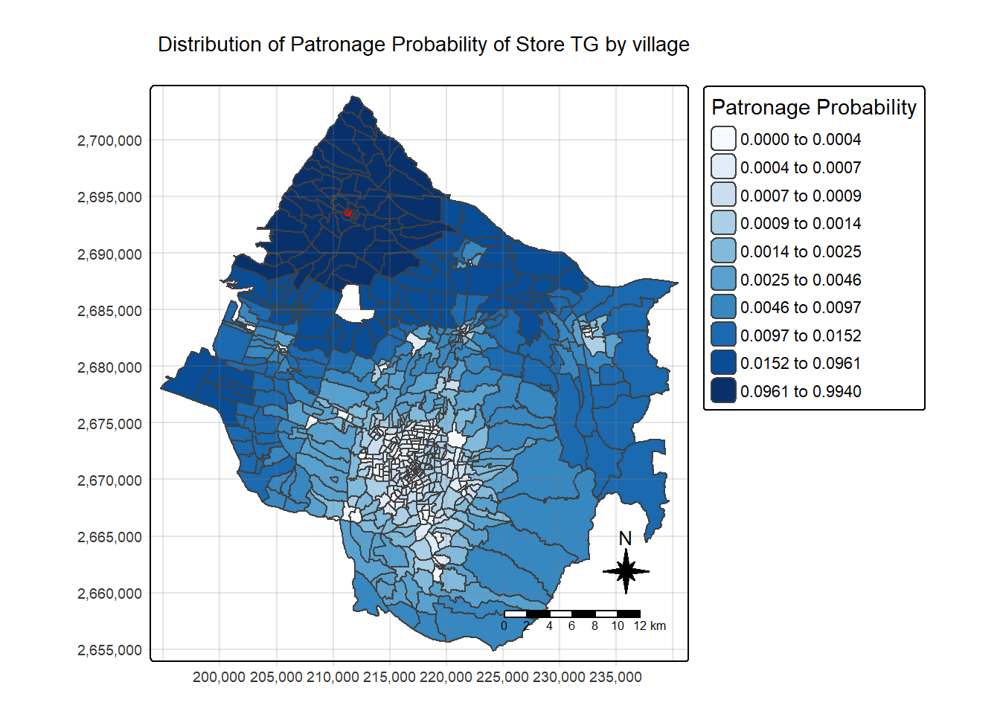
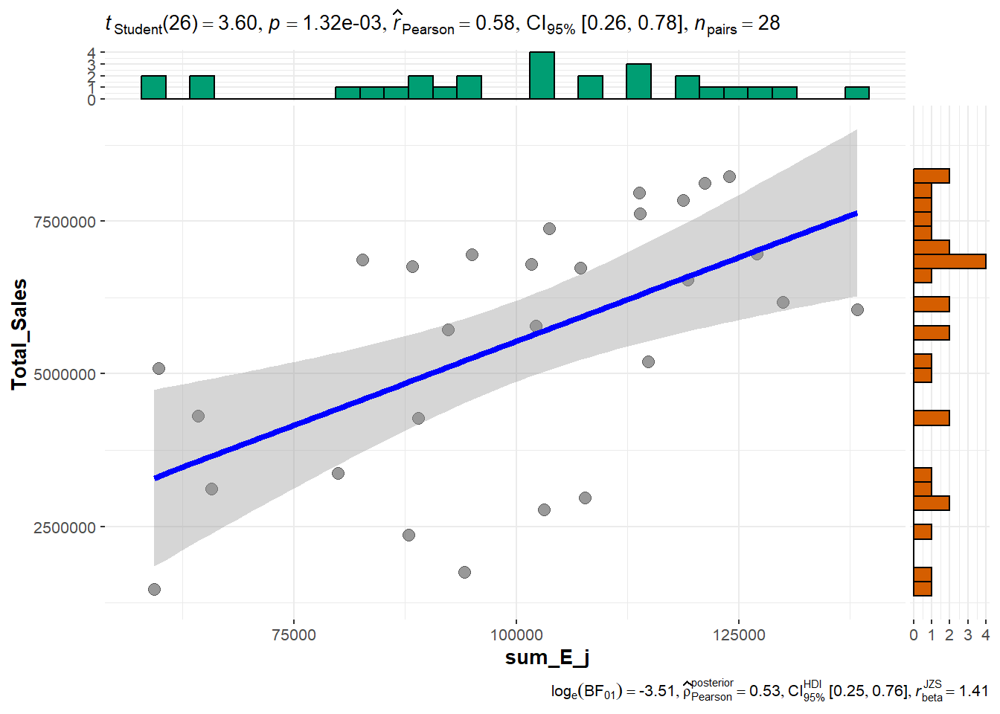

pacman::p_load(tmap, MCI, sf, ggstatsplot, tidyverse)In-class Exercise 10: Modelling Spatial Interaction
Getting Started
Importing Data
Importing geospatial data
stores <- st_read(dsn = "data/geospatial", layer = "STORES_TC")Reading layer `STORES_TC' from data source
`C:\sonphamsmu\isss626-aug2526\In-class_Ex\In-class_Ex10\data\geospatial'
using driver `ESRI Shapefile'
Simple feature collection with 28 features and 3 fields
Geometry type: POINT
Dimension: XY
Bounding box: xmin: 202702.9 ymin: 2662196 xmax: 232773.2 ymax: 2693557
Projected CRS: TWD97 / TM2 zone 121town <- st_read(dsn = "data/geospatial", layer = "TOWN_TC") Reading layer `TOWN_TC' from data source
`C:\sonphamsmu\isss626-aug2526\In-class_Ex\In-class_Ex10\data\geospatial'
using driver `ESRI Shapefile'
Simple feature collection with 28 features and 7 fields
Geometry type: POLYGON
Dimension: XY
Bounding box: xmin: 194797.1 ymin: 2654887 xmax: 240450.2 ymax: 2703838
Projected CRS: TWD97 / TM2 zone 121village <- st_read(
dsn = "data/geospatial",
layer = "VILLAGE_TC")Reading layer `VILLAGE_TC' from data source
`C:\sonphamsmu\isss626-aug2526\In-class_Ex\In-class_Ex10\data\geospatial'
using driver `ESRI Shapefile'
Simple feature collection with 622 features and 10 fields
Geometry type: MULTIPOLYGON
Dimension: XY
Bounding box: xmin: 194797.1 ymin: 2654887 xmax: 240450.2 ymax: 2703838
Projected CRS: TWD97 / TM2 zone 121tmap_mode("plot")
tm_shape(town) +
tm_polygons() +
tm_shape(village) +
tm_polygons() +
tm_shape(stores) +
tm_dots()
Importing aspatial data
pop2019 <- read_csv(
"data/aspatial/pop2019.csv")
store_sales <- read_csv(
"data/aspatial/Store_sales_data.csv")summary(store_sales) Store Code POD code Bills Amount
Length:5499 Length:5499 Min. : 1.0 Min. : 0
Class :character Class :character 1st Qu.: 37.0 1st Qu.: 26703
Mode :character Mode :character Median : 186.0 Median : 139643
Mean : 331.9 Mean : 236787
3rd Qu.: 457.0 3rd Qu.: 331952
Max. :7764.0 Max. :6076060
Ave Bill
Min. : 0.0
1st Qu.: 661.3
Median : 730.5
Mean : 825.1
3rd Qu.: 862.2
Max. :24356.0 Data Preparation
Aggregating store sales
store_sales_aggre <- store_sales %>%
group_by(`Store Code`) %>%
summarise(
"Total_Bill" = sum(Bills, na.rm = TRUE),
"Total_Sales" = sum(Amount, na.rm = TRUE)) #na.rm to skip NA valuesRelational join
In the code chunk below, left_join() of dplyr package is used to append data from store_sales data.frame onto stores sf data.frame. At the same time a new field called Store_size has been created.
stores <- stores %>%
left_join(store_sales_aggre,
by = join_by(
Store_CD == `Store Code`)) %>%
mutate(Store_size = 100)Tidying pop2019 data.frame
We are planning to append data in pop2019 data.frame onto village sf data.frame. Before we can do so, it is wise to check in to values in the join field are the same.
pop2019 <- pop2019 %>%
mutate(V_ID = str_remove_all(
V_ID, "-"))village <- village %>%
left_join(pop2019,
by = join_by(
VILLCODE == V_ID))Check for missing or zero values
Code chunk below is used to check in any records with missing values.
summary(village) VILLCODE COUNTYNAME TOWNNAME VILLNAME
Length:622 Length:622 Length:622 Length:622
Class :character Class :character Class :character Class :character
Mode :character Mode :character Mode :character Mode :character
VILLENG COUNTYID COUNTYCODE TOWNID
Length:622 Length:622 Length:622 Length:622
Class :character Class :character Class :character Class :character
Mode :character Mode :character Mode :character Mode :character
TOWNCODE NOTE COUNTY_ID COUNTY
Length:622 Length:622 Min. :66000 Length:622
Class :character Class :character 1st Qu.:66000 Class :character
Mode :character Mode :character Median :66000 Mode :character
Mean :66000
3rd Qu.:66000
Max. :66000
NA's :5
TOWN_ID TOWN VILLAGE H_CNT
Min. :6.6e+07 Length:622 Length:622 Min. : 180
1st Qu.:6.6e+07 Class :character Class :character 1st Qu.: 724
Median :6.6e+07 Mode :character Mode :character Median :1335
Mean :6.6e+07 Mean :1592
3rd Qu.:6.6e+07 3rd Qu.:2195
Max. :6.6e+07 Max. :7599
NA's :5 NA's :5
P_CNT M_CNT F_CNT INFO_TIME
Min. : 487 Min. : 257 Min. : 230 Length:622
1st Qu.: 2139 1st Qu.:1095 1st Qu.:1053 Class :character
Median : 3862 Median :1911 Median :1934 Mode :character
Mean : 4545 Mean :2234 Mean :2311
3rd Qu.: 6151 3rd Qu.:3022 3rd Qu.:3171
Max. :18652 Max. :8741 Max. :9911
NA's :5 NA's :5 NA's :5
geometry
MULTIPOLYGON :622
epsg:3826 : 0
+proj=tmer...: 0
The output print above revealed that the are five missing values in H_CNT, P_CNT, M_CNT and F_CNT fields. Hence, code chunk below is used to remove the five records with missing values from village sf data.frame.
village <- village %>%
filter(!is.na(P_CNT)) Computing Distance Matrix
Instead of calculate the distance between the villages and stores, we will calculate the centroid of each village using the code chunk below. Then, compute the distance between the centroids of the villages and the stores.
village_center <- st_point_on_surface(village)
distmat <- st_distance(village_center, stores) Next, the code chunk below is used to convert the distance matrix into long data.frame format
rownames(distmat) <- village$`VILLCODE`
colnames(distmat) <- stores$`Store_CD`
distmat_long <- distmat %>%
as.data.frame() %>%
rownames_to_column(var = "VILLCODE") %>%
pivot_longer(
cols = -VILLCODE,
names_to = "Store_CD",
values_to = "distance"
) %>%
mutate(distance = as.numeric(distance)) Preparing Interaction Matrix
Code chunk below will be used to build the interaction matrix required by MCI package.
interaction_matrix <- distmat_long %>%
left_join(
stores %>%
st_drop_geometry() %>%
select(Store_CD, Store_size),
by = "Store_CD") %>%
relocate(
distance, .after = last_col())summary(interaction_matrix) VILLCODE Store_CD Store_size distance
Length:17276 Length:17276 Min. :100 Min. : 108.5
Class :character Class :character 1st Qu.:100 1st Qu.: 6678.7
Mode :character Mode :character Median :100 Median :11965.3
Mean :100 Mean :12762.7
3rd Qu.:100 3rd Qu.:18122.3
Max. :100 Max. :41395.4 Computing Huff model
huff_share <- huff.shares(
interaction_matrix, "VILLCODE", "Store_CD",
"Store_size", "distance")Trade area analysis for a single store
First, let us select market share data of a store by usign Store_CD field (i.e. TG).
market_share <- huff_share %>%
filter(Store_CD == "TG")Next, trade areas of the selected will be derived
Trade_area <- village %>%
left_join(market_share)Before plotting the trade area map, code chunk below is used to extract the selected store from stores sf data.frame.
selected_store <- stores %>%
filter(Store_CD == "TG")tm_shape(Trade_area) +
tm_polygons(fill = "p_ij",
fill.scale = tm_scale_intervals(
style = "quantile",
n = 10,
values = "brewer.blues"),
fill.legend = tm_legend(
title = "Patronage Probability")) +
tm_shape(selected_store) +
tm_dots(size = 0.3,
fill = "red",
col = "black") +
tm_title("Distribution of Patronage Probability of Store TG by village") +
tm_layout(frame = TRUE) +
tm_borders(fill_alpha = 0.5) +
tm_compass(type="8star", size = 2) +
tm_scalebar() +
tm_grid(alpha =0.2) 
Store sales analysis
One of the usage of Huff model is to estimate the store sales by using village population.
Firstly, let us append P_CNT field from village sf.data.frame to huff_share data.frame by using the code chunk below.
huff_share_pp <- huff_share %>%
left_join(village %>%
st_drop_geometry() %>%
select(VILLCODE, P_CNT),
by = "VILLCODE") %>%
relocate(
distance, .after = last_col())Next, shares.total() of MCI package will be used to calculate the total sales by using the code chunk below.
huff_total <- shares.total(
huff_share_pp, "VILLCODE", "Store_CD",
"p_ij", "P_CNT")Code chunk below is used to append the estimate store sales (Ej) onto stores sf data.frame.
store_sales_est <- stores %>%
left_join(huff_total,
by = join_by(
"Store_CD" == "suppliers_single"))Now, we can visualise how well the estimate sales as compare to the actual sales
store_sales_nongeom <- store_sales_est %>% st_drop_geometry()
ggscatterstats(
store_sales_nongeom,
x = sum_E_j,
y = Total_Sales)
huff_share_wider <- huff_share %>%
select(VILLCODE, Store_CD, p_ij) %>%
pivot_wider(names_from = Store_CD,
values_from = p_ij)